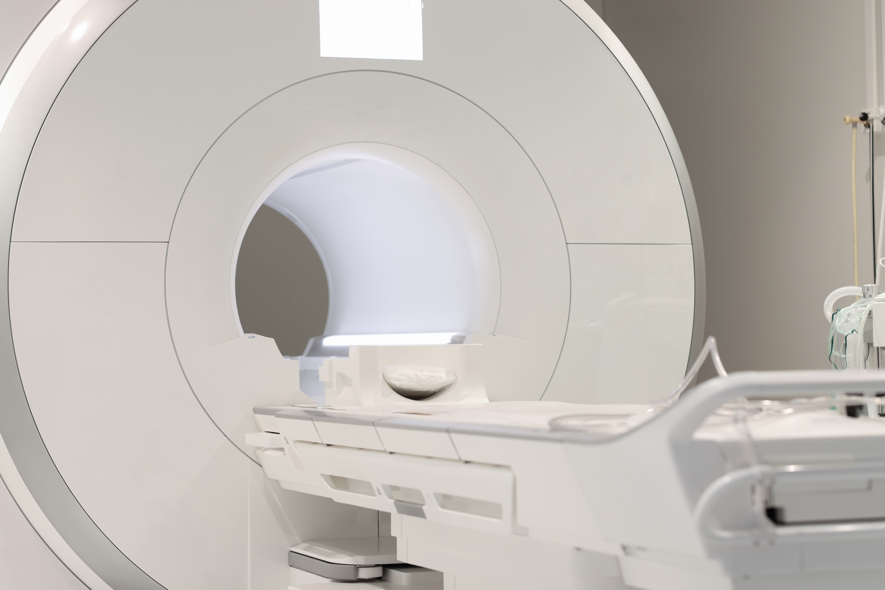
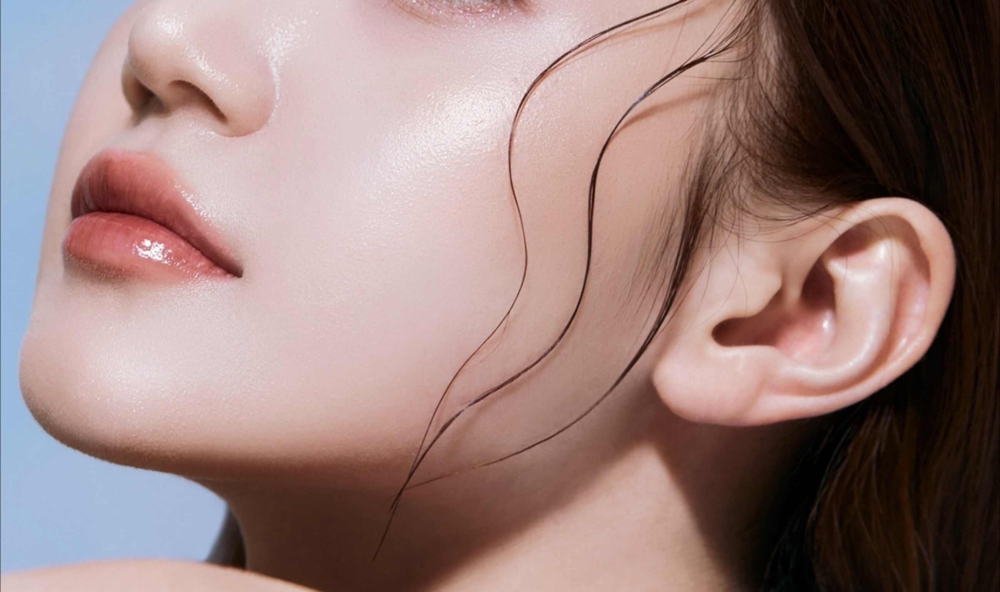
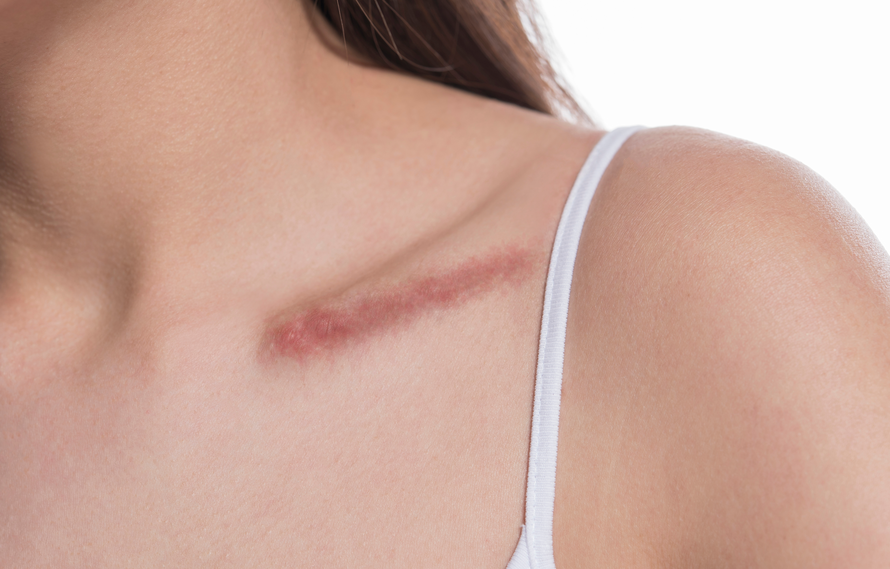

이수열(귓불 갈라짐), 켈로이드 흉터, 칼귀 교정 등
일상에서 불편을 주는 문제를 성형외과 전문의가 정밀하게 해결합니다.
크지 않은 수술이라도 결과는 오래 눈에 보입니다. 섬세함이 필요합니다.
귓불 갈라짐, 켈로이드, 칼귀 같은 문제는 수술 자체는 작지만, 귀라는 잘 보이는 부위에 결과가 남기 때문에 흉터 관리와 수술 설계가 더욱 중요합니다.
선메디컬센터 유성선병원 성형외과는 성형외과 전문의가 직접 집도하여 미용적 결과까지 함께 고려합니다. 켈로이드처럼 재발 위험이 있는 경우에는 수술 후 방사선 치료나 압박 요법 등 추가 관리 계획을 함께 수립합니다.
간단한 수술이라도 성형외과 전문의가 직접 집도합니다. 절개 방향, 봉합 방법, 흉터 설계를 처음부터 미용적으로 고려합니다.

켈로이드는 수술만으로는 재발 위험이 높습니다. 수술 후 방사선 치료, 스테로이드 주사, 압박 요법 등을 종합병원 체계 안에서 연계하여 관리합니다.
켈로이드 유전 소인, 이전 치료 이력 등을 원내에서 확인하고 수술 계획에 반영합니다. 부분마취부터 수면마취까지 환자 상황에 맞게 선택 가능합니다.
귓불이 갈라지거나 찢어진 경우를 교정합니다. 귀걸이로 인한 외상성 이수열, 선천성 이수열 모두 교정 가능합니다. 흉터가 귓불 경계선 안에 위치하도록 설계합니다.

수술 흉터, 여드름 자국, 피어싱 부위에 생긴 켈로이드(붉고 딱딱하게 튀어오른 흉터)를 치료합니다. 수술적 제거와 비수술 치료(스테로이드 주사, 레이저)를 상태에 따라 선택합니다.
귀가 과도하게 측면으로 튀어나온 돌출귀(칼귀)를 교정합니다. 귀 뒤쪽 피부를 최소 절개하고 연골을 재형성하여 자연스럽게 귀를 세웁니다.

기존 수술이나 사고로 생긴 보기 싫은 흉터를 재교정합니다. 흉터 방향 변경, 불규칙한 흉터 정리, 흉터 축소 등 다양한 방법으로 흉터를 최소화합니다.
나이가 들면서 얇아지거나 쪼그라든 귓볼에 지방이식 또는 필러를 이용해 볼륨을 회복합니다. 귀걸이가 잘 어울리는 귓볼을 되찾을 수 있습니다.
피어싱으로 늘어나거나 변형된 귓불 홀을 교정합니다. 장기간 무거운 귀걸이로 늘어진 홀, 여러 개의 홀을 합친 변형, 외상으로 찢어진 홀 모두 교정 가능합니다.
작은 고민이라도 성형외과 전문의의 정확한 진단이 먼저입니다.